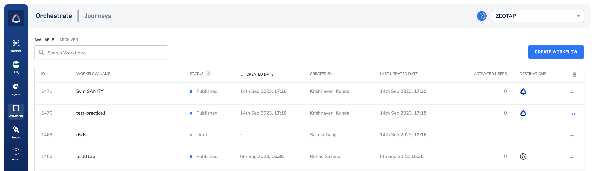

Orchestrate encompasses a sub-product called Journeys, which is Zeotap's real-time user journey orchestration product that ensures consistent and real-time personalisation across a user journey. These journeys are built on a foundation of their first-party data unified by Zeotap. For example, when website visitors abandon their cart and you can then choose to target high-valued and low-valued users differently. Or if these users continue their purchase Journey in the the Zeotap CDP App, you can offer fine-grained personalisations that improve conversion.
The following are the highlights offered by Journeys
Marketer-friendly interface to personalise user journeys in real-time.
Data unification and activation across platforms to power omnichannel personalisation.
For you to be able to use Journey and create workflows, ensure the following:
A workflow runs on the Event Name and other attributes that are mapped in the Catalogue. Hence, ensure that the above points are taken care of.
